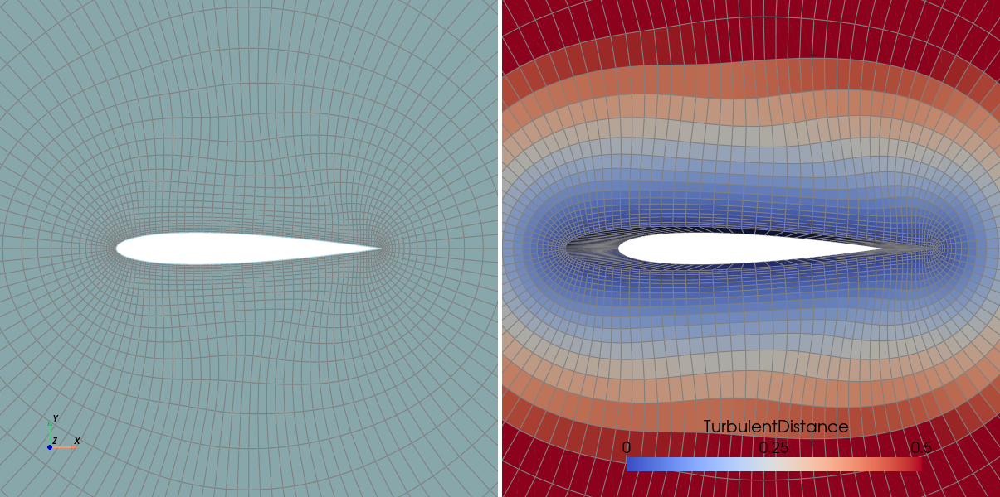

Maia basics
This first tutorial will teach you the basics of maia, namely how to:
use
mpi4pyto setup and execute python scripts in parallel,make the distinction between the parallel trees representations used in maia,
understand how the functionalities are organised within the different modules.
This first tutorial just require you to read carefuly the snippets and to answer questions identified by the ❓ symbol. Howerver, if you prefer to reproduce the steps by yourself, ensure that you have:
a valid installation of maia,
the input mesh file naca_2d.cgns,
the script
01_basic.py,
and remember that the command to run the script in parallel, using eg 4 processes, is
mpirun -np 4 python3 01_basic.py
First script
Imports
Maia is a parallel application ! Almost every function require an MPI communicator, used to synchronize the running processes.
👉️ First, we import the COMM_WORLD communicator object provided by the mpi4py package.
️
from mpi4py import MPI
comm = MPI.COMM_WORLD
print(f"Hello from rank {comm.Get_rank()} out of size {comm.Get_size()}")
[stdout:0] Hello from rank 0 out of size 3
[stdout:2] Hello from rank 2 out of size 3
[stdout:1] Hello from rank 1 out of size 3
This communicator includes all the processes spawned by the mpirun command,
so the displayed size should be what you put after the -np on the command line.
❓ How many processes have been used on this exemple ?
👉️ Then, we import the main maia package, and the maia.pytree package that will help
us for tree manipulations.
import maia
import maia.pytree as PT
File reading
The input and output functions are gathered in maia.io module.
👉️ Let’s read the CGNS file from the disk using the main file reading function
maia.io.file_to_dist_tree():
tree = maia.io.file_to_dist_tree('naca_2d.cgns', comm)
[stdout:0] Distributed read of file naca_2d.cgns...
Read completed (0.05 s) -- Size of dist_tree for current rank is 85.6KiB (Σ=256.9KiB)
❓ Is the output a distributed (DistTree) or a partitioned (PartTree) tree ?
You can check your answer by printing the tree with print_tree().
The output is a distributed tree. We can guess it from function name (file_to_dist_tree),
from function documentation (see Returns keyword), or from type hints (CGNSDistTree).
If we print the tree, we observe the presence of nodes named :CGNS#Distribution,
which are specific to distributed trees.
Algo module
To apply treatments to our distributed tree, we can use functions
from maia.algo. The functions of this module are sorted in
three namespaces:
functions of
maia.algo.distonly apply to distributed trees,functions of
maia.algo.partonly apply to partitioned trees,functions directly below
maia.algoapply to both distributed or partitioned trees.
👉️ Here we apply the extrude() function, which will extrude our
2D input mesh into a 3D mesh.
maia.algo.dist.extrude(tree, (0,0,1), comm)
❓ This function operate inplace (tree is modified). Is our tree distributed or partitioned now ?
The tree is still a distributed tree. A key rule of maia.algo functions is that they do not
change the ‘parallel kind’ of trees.
❓ Say that we want to apply another function : compute_wall_distance().
Why is this not possible ?
compute_wall_distance() function only applies to partitioned trees.
Since we have a distributed tree, calling the function would raise an exception.
Note
Algo module is the main module of maia. It contains several functions for applying various treatments to CGNS trees, such as connectivity conversions, mesh conversion, geometry transformations, interpolations, extractions…
Factory module
The functions transforming the parallel kind of tree are avaiable in maia.factory module.
👉️ ️Here we create a partitioned tree from a distributed tree (this is know as the partitioning operation):
ptree = maia.factory.partition_dist_tree(tree, comm)
[stdout:0] Partitioning tree of 1 initial block...
Partitioning completed (0.35 s) -- Nb of cells for current rank is 1.8K (Σ=5.5K)
We now have two ‘views’ of our original data: a distributed view and a partitioned view. Although these views are different, they both represent the same mesh and data.
Tip
If we displayed ptree, we would notice the presence of nodes named :CGNS#GlobalNumbering,
which are specific to partitioned trees.
👉️ Since ptree is a partitioned tree, we can call compute_wall_distance() on it:
maia.algo.part.compute_wall_distance(ptree, comm)
[stdout:0] Wall distance computed (0.37 s)
❓ What happens to the distributed view (tree) after the function is called ?
Nothing happens to tree. Only ptree, the partitioned view, is updated by the function.
Note
Factory module also contains recover_dist_tree(),
which rebuild a distributed tree from a partitioned tree, and some functions
to create a distributed tree from a full (non parallel) cgns tree, and vice-versa.
Transfer module
The last main module of maia is maia.transfer. The purpose of this
module is to exchange data between the distributed and partitioned views
of a same mesh.
👉️ Using part_tree_to_dist_tree_all(), we can bring back
the wall distance fields to the distributed view:
maia.transfer.part_tree_to_dist_tree_all(tree, ptree, comm)
We can see that “WallDistance” container is now present on the distributed tree tree,
meaning that data has been transfered:
print(PT.get_node_from_name(tree, 'WallDistance') is not None)
[stdout:0] True
[stdout:1] True
[stdout:2] True
Note
Transfer module mainly expose to end-users this function and its counterpart which transfer data from
the distributed to the paritioned view.
Keep in mind that calling a function of maia.transfer on two trees that does not describe the
same mesh makes no sense !
Final write and visualization
👉️ Finally, we write our distributed tree using maia.io.dist_tree_to_file() :
maia.io.dist_tree_to_file(tree, 'naca_3d.cgns', comm)
[stdout:0] Distributed write of a 338.3KiB dist_tree (Σ=1014.7KiB)...
Write completed [naca_3d.cgns] (4.42 s)
We can check (using eg the command line tool maia_print_tree) that the output file
is a standard CGNS file that does not contains any information about parallelism anymore:
CGNSTree CGNSTree_t
├───CGNSLibraryVersion CGNSLibraryVersion_t R4 [4.2]
└───Base CGNSBase_t I4 [3 3]
├───WALL Family_t
│ └───FamilyBC FamilyBC_t "BCWall"
├───FARFIELD Family_t
│ └───FamilyBC FamilyBC_t "BCFarfield"
└───Zone Zone_t I4 [[11328 5546 0]]
├───ZoneType ZoneType_t "Unstructured"
├───GridCoordinates GridCoordinates_t
│ ╵╴╴╴ (3 children masked)
├───HEXA_8.0 Elements_t I4 [17 0]
│ ╵╴╴╴ (2 children masked)
├───QUAD_4.0 Elements_t I4 [7 0]
│ ╵╴╴╴ (2 children masked)
├───ZoneBC ZoneBC_t
│ ╵╴╴╴ (2 children masked)
├───QUAD_4.0a Elements_t I4 [7 0]
│ ╵╴╴╴ (2 children masked)
├───QUAD_4.0b Elements_t I4 [7 0]
│ ╵╴╴╴ (2 children masked)
├───ZoneGridConnectivity ZoneGridConnectivity_t
│ ╵╴╴╴ (2 children masked)
└───WallDistance DiscreteData_t
╵╴╴╴ (7 children masked)
In other words, the final result does not depends on the number of processes used to run the script.
We can thus open it with ParaView (or an other visualization software) an see our input 2D mesh (left) and our output 3D mesh with wall distance field computed (right):

Attention
Since ParaView does not manage DiscreteData_t containers, you need to change the label
of “WallDistance” node into for FlowSolution_t if you want to do the same figure.
This conclude this first script 🎉!
Indeed, this minimal workflow is not so far from realistic applications ; we usually follow the same steps when doing computations with a solver:
Read the mesh and perform some preprocessing steps
Partition the mesh in order to call the solver
Move back the fields computed by the solver on the input tree
Save the results on the disk and/or do some postprocessing steps
More about maia trees
🏗️ Under construction